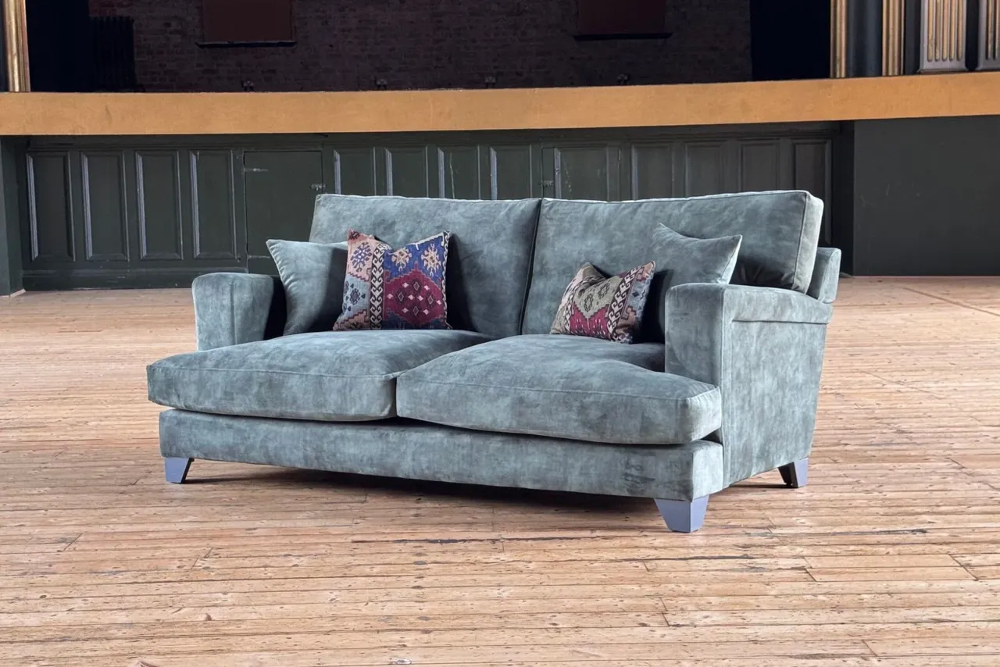

Foundry
A stronger outline. A softer invitation.
Foundry gives a room a more architectural outline, with sculptural arms and generous seating depth. Layered foam-and-fibre seat cushions and fibre-filled backs bring softness to its structured form.
Need help choosing? Ask us about Foundry.
Estimated production: 6–8 weeks, followed by 1–2 weeks for delivery. Timing depends on material availability and is confirmed for your order. Delivery and aftercare details.
Foundry, in five sizes.
All measurements below are in centimetres. Check your room, doorways, stairs and delivery access against the final specification before ordering.
| Size | Width | Depth | Height | Seat width | Seat height | Seat depth |
|---|---|---|---|---|---|---|
| Armchair | 105 | 98 | 95 | 65 | 43 | 76 |
| Love seat | 125 | 98 | 95 | 85 | 43 | 76 |
| 2 seater | 165 | 98 | 95 | 125 | 43 | 76 |
| 3 seater | 205 | 98 | 95 | 165 | 43 | 76 |
| 4 seater | 225 | 98 | 95 | 185 | 43 | 76 |
Handmade upholstery can vary slightly. Ask us to confirm the dimensions and access requirements for your chosen configuration.
Made with care.
Care for your Foundry
Vacuum fabric gently with a soft brush attachment. Plump and rotate loose cushions regularly, and keep upholstery away from strong direct sunlight. Follow the care guidance supplied for your selected material.
Commercial projects
Manolo and Cambridge Linen are not suitable for commercial use. For a commercial project, we confirm the upholstery and complete specification for your intended setting before an order is agreed.
Explore TradeStructural guarantee
The manufacturer provides a five-year structural and manufacturing guarantee covering the frame, springing and webbing, subject to its terms. Normal wear and damage from misuse or neglect are excluded. We confirm the applicable coverage and claims process with your quotation.
Read about delivery and aftercareMake it yours.
Tell us about your space and preferred upholstery. We will help you work through the choices and prepare a quotation for your Foundry.
Request advice